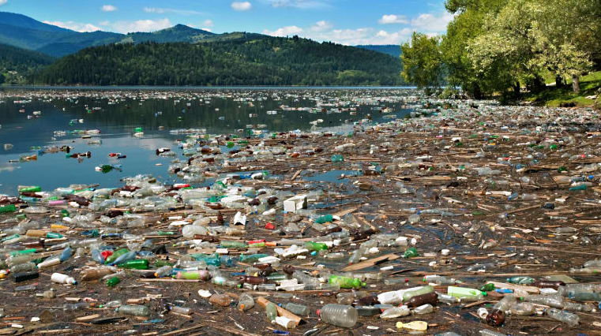
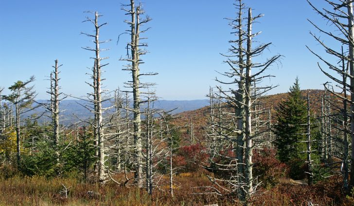
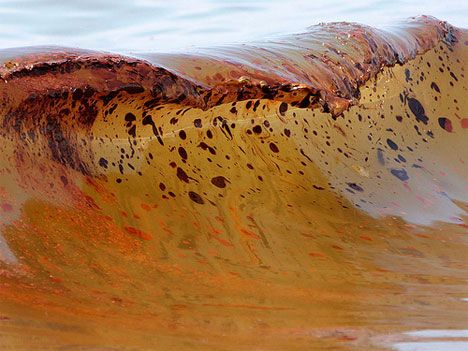

Ocean Litter
Litter in the world's oceans come from many sources, including containers that fall off ships, trash that washes off city streets into rivers that lead into the sea, and waste from landfills that blows into streams or directly into the ocean.
Marine life can become entangled in a variety of ocean debris including fishing nets,lines, and lures. Plastic pollution leads to the deaths of millions of marine birds each year.
Waste in a lake
Acid Rain
Acid rain is primarily caused by the release of sulfur and nitrogen into the atmosphere as a result of the combustion of oil and coal by power plants and automobiles." Acid rain pollutes water as the rainfall drains toward lakes, streams, ponds and tributaries.
Acid Rain effects the fish population.It reduces fish population numbers, completely eliminate fish species from a waterbody, and decrease biodiversity.It also causes fish to have problems with reproduction and finding food.
The effect of acid rain on trees.
Oil
Oil spills into rivers, bays, and the ocean mostly are caused by accidents involving tankers, barges, pipelines , refineries, drilling rigs, and storage facilities. Spills can be caused by people making mistakes or being careless.
Oil cannot dissolve in water and forms a thick sludge in the water. This suffocates fish, gets caught in the feathers of marine birds stopping them from flying and blocks light from photosynthetic aquatic plants. Many birds and animals also ingest oil when they try to clean themselves, which can poison them.
It is estimated that approximately 706 million gallons of waste oil enter the ocean every year with over half coming from land drainage and waste disposal.
Oil when in water
Other Types Of Water Pollution
- Radioactive Substances- Radioactive substances are atoms that decay naturally. They can give off alpha particles, beta particles and gamma radiation
- Chemical Water Pollution- Common pollutants include human or animal waste; disease-producing organisms; radioactive materials; toxic metals such as lead or mercury; agricultural chemicals such as pesticides, herbicides, or fertilizers; acid rain ; and high-temperature water discharged from power plants, often called "thermal pollution."
- Oxygen Depleting- Oxygen depletion is a phenomenon that occurs in aquatic environments as dissolved oxygen becomes reduced in concentration to a point where it becomes detrimental to aquatic organisms living in the system.
- Surface Water Pollution- Surface water pollution is the pollution of aquatic systems that are above ground, such as streams, lakes and rivers. These waters become polluted when rainwater runoff carries pollutants into the water.
- Nutrients Pollution- Nutrient pollution is the process where too many nutrients, mainly nitrogen and phosphorus, are added to bodies of water and can act like fertilizer, causing excessive growth of algae.
- Sewage and Wastewater- Domestic households, industrial and agricultural practices produce wastewater that can cause pollution of many lakes and rivers. Sewage is the term used for wastewater that often contains faeces, urine and laundry waste.
Fun Facts!
Over 1 million seabirds and 100,000 sea mammals are killed by pollution every year!!
Each year 1.2 trillion gallons of untreated sewage,stormwater, and industrial waste are dumped into US water!